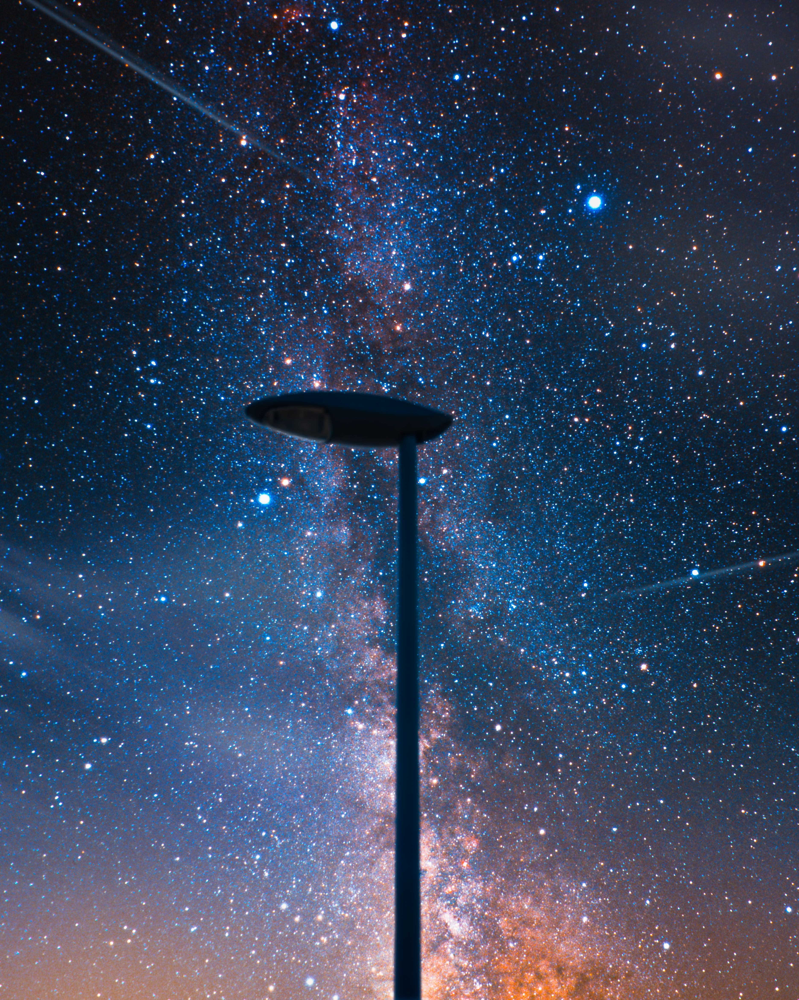

Voyager 1 ve 2: 49 Yıllık Yolculuk ve Bir Işık-Günü
18 Kasım 2026 sabahı, Türkiye saatiyle 13.16 sularında, Voyager 1 Dünya’dan tam bir ışık-günü uzaklığa ulaştı. Şu an gönderdiğiniz bir radyo komutu aracın anteninde ancak yarın bu saatte beliriyor, cevabı da ertesi gün geliyor. Bu araç 1977’de bir Titan roketiyle fırlatıldı, bugün 49 yılı geride bıraktı ve hâlâ konuşuyor. Üstelik yalnız değil: ikizi Voyager 2 de çalışıyor, ama güç bütçeleri günden güne daralıyor. Bu yazıda iki aracın hikâyesini, gezegenlerden yıldızlararası boşluğa uzanan yolunu ve bugünkü durumunu, mümkün olduğunca tarihli rakamlarla anlatıyorum.

Bir hizalanma ve kesilen bir bütçe
Hikâye 1960’ların ortasında, JPL’de gezegenlerarası görevler üzerinde çalışan bir yüksek lisans öğrencisiyle başlıyor. PBS’in The Farthest belgeselinin sitesine göre Gary Flandro 1965’te Jüpiter, Satürn, Uranüs ve Neptün’ün öyle dizileceğini fark etti ki, bir uzay aracı her gezegenin çekimini sapan gibi kullanıp sonrakine fırlayabilecekti. Böyle bir tur on ila on iki yıl sürecekti. Fırsat 1970’lerin sonunda birkaç ay açık kalacak, sonra yaklaşık 175 yıl kapanacaktı.
Fikir Kongre’ye gelince tökezledi. Aynı kaynağa göre dört gezegeni gezecek “Grand Tour” reddedildi, yalnızca Satürn’e kadar gidecek daha ucuz bir görev onaylandı. JPL’nin Neptün’e dayanabilecek araçları gizlice yine de ürettiği, Kongre’nin genişletilmiş görevi sonradan finanse ettiği de aynı sayfada anlatılıyor. Bu ayrıntıyı tek kaynaktan aktarıyorum, başka bir yerden doğrulamadım.
İki araç 1977 yazında yola çıktı. PBS’in aynı sayfasına ve Wikipedia’ya göre Voyager 2, 20 Ağustos 1977’de, Voyager 1 ise 5 Eylül 1977’de Cape Canaveral’dan kalktı. Numaralar karıştırıcı görünebilir: Voyager 2 önce fırlatıldı, ama Voyager 1 daha geç kalkmasına rağmen Jüpiter’e ve Satürn’e önce vardı.
On iki yılda dört dev gezegen
Wikipedia’nın aktardığı tarihlere göre Voyager 1 Jüpiter’e 5 Mart 1979’da, Satürn’e 12 Kasım 1980’de yaklaştı. Voyager 2 Jüpiter’de 9 Temmuz 1979’da (bulut tepelerinden 570.000 km), Satürn’de 26 Ağustos 1981’de (101.000 km), Uranüs’te 24 Ocak 1986’da (81.500 km) ve Neptün’de 25 Ağustos 1989’da bulundu. Uranüs ile Neptün’e uğramış tek araç Voyager 2 olarak kalıyor.
NASA’nın Neptün buluşmasının otuzuncu yılı için yazdığı sayfada anlatıldığı gibi Voyager 2, Neptün’ün kuzey kutbunun yaklaşık 3.408 mil üstünden geçti. Yaklaşık beş saat sonra da Triton’a yaklaşık 25.000 mil kala uğradı. Triton’un yüzeyinde çarpma krateri azdı, yani yüzey genç görünüyordu. Yaklaşık eksi 392 °F’lik bir soğukta görüntülerde koyu malzeme püsküren gayzerler seçildi. Voyager 2 incelediği son katı cisim olarak Triton’u bırakıp güneş sisteminin dışına yöneldi.
Altın Plak: uzaya atılmış bir mesaj şişesi
Her iki araca, aynı içerikte bir plak da bağlandı. NASA’nın içerik sayfasına göre Carl Sagan başkanlığındaki bir komite plağa 115 görüntü, 55 dilde selamlama (Akadcadan Çin’in Wu lehçesine kadar), doğadan sesler ve yaklaşık 90 dakikalık bir müzik seçkisi koydu. Rüzgâr, dalga, gök gürültüsü, kuş ve balina sesleri de plağın içinde.
Wikipedia’nın Altın Plak maddesi fiziksel ayrıntıları veriyor. Plak, önce nikel sonra altınla kaplanmış 30 cm’lik bir bakır disk ve dakikada 16⅔ devirle çalınmak üzere tasarlanmış. Alüminyum kapağın üzerinde uranyum-238 var. Wikipedia bu izotopun yarı ömrünün 4,468 milyar yıl olduğunu da yazıyor. Plağı çalacak bir yaratığın bulunup bulunmayacağını kimse bilmiyor. Voyager 1’in yaklaşık 40.000 yıl sonra Gliese 445 yıldızına (AC +79 3888) yaklaşık 1,7 ışık-yılı kala geçmesi bekleniyor. Bu, NASA’nın ışık-günü sayfasındaki rakam. Wikipedia’nın başka bir sayfası 1,6 ve 1,8 diyor, bunu “Kaynaklar çelişiyor” bölümüne ekledim.
Pale Blue Dot: dönüp bakılan fotoğraf
14 Şubat 1990’da Voyager 1 Güneş’e doğru döndü ve altı geniş yüzlü kare çekti. JPL’nin “Pale Blue Dot images turn 25” yazısına göre bu, güneş sisteminin ilk “aile portresi”nin parçasıydı, fikir de Carl Sagan’dan çıkmıştı. Sagan o dönemde görüntüleme ekibinin üyesiydi. Araç Güneş’ten yaklaşık 40 AU uzaktaydı.
NASA’nın Photojournal sayfası Dünya’nın bu karede yalnızca 0,12 piksel büyüklüğünde bir hilal olduğunu söylüyor. Dünya, kameranın tek bir görüntü öğesinden bile küçük kalıyor. Güneş çok yakın olduğu için Dünya, saçılmış bir ışık huzmesinin içinde duruyor. Mavi, yeşil ve mor filtrelerle alınan kareler renkli birleştirilmiş. Sagan’ın kitabındaki cümleler sayfada aktarılıyor: “Look again at that dot. That’s here. That’s home. That’s us.”
Heliopozu geçmek: yıldızlararası ortam
Heliopoz, genel tanımıyla Güneş’in etkisinin yerini yıldızlararası ortama bıraktığı sınır. Wikipedia’ya göre Voyager 1 bu sınırı 25 Ağustos 2012’de, Güneş’ten yaklaşık 121 AU uzaktayken geçti. NASA bunu 12 Eylül 2013’te doğruladı. Voyager 2 sınırı 5 Kasım 2018’de, Güneş’ten 119,7 AU uzaktayken aştı.
Şemadaki sayılara bir uyarı: Neptün ve Pale Blue Dot Güneş’e göre, Voyager’ların bugünkü uzaklıkları ise Dünya’ya göre verilmiş. İkisi arasındaki fark en çok yaklaşık 1 AU. 173 AU gibi bir ölçekte bu, grafiğin çözünürlüğü içinde kalıyor.
Kasım 2023: konuşan araç anlamsız konuşmaya başladı
JPL’nin Nisan 2024 duyurusuna göre Voyager 1, 14 Kasım 2023’te okunabilir bilim ve mühendislik verisi göndermeyi bıraktı. Komutları almaya devam ediyordu, ama gönderdiği veri çözülemiyordu. Mart 2024’te sorun aracın üç bilgisayarından biri olan uçuş verisi alt sistemine (FDS) bağlandı. Verileri paketleyip Dünya’ya yollayan birimdi bu. Bir bellek yongası çalışmıyordu. Wikipedia belleğin yaklaşık yüzde 3’ünün bozulduğunu yazıyor, JPL ise yalnızca “bellek bölümünün bir kısmını saklayan tek bir yonga” diyor.
Yongayı onarmak mümkün değildi. Mühendisler bozuk bölümdeki yazılımı parçalara ayırıp FDS belleğinin sağlam yerlerine dağıttı. Parçaların birlikte çalışması için kodu ayarladılar ve birbirlerine verdikleri adresleri güncellediler. Mühendislik verisini içeren kod 18 Nisan 2024’te gönderildi. 20 Nisan’da gelen sinyal düzeltmenin işe yaradığını gösterdi. JPL, bilim verisini döndürecek kodların da önümüzdeki haftalarda taşınacağını söylüyor. Bu aşamanın tam tarihini ben doğrulayamadım. Wikipedia anomali sırasındaki verilerin kaybolduğunu belirtiyor.
Bu işin sıradışı yanı mesafeydi. JPL’ye göre sinyal o sırada her yönde yaklaşık 22,5 saatte gidiyordu, yani her deneme bir buçuk gün sonra yanıtlanıyordu. Bir yazılım yaması yazmak, yapıştırmak ve sonucu beklemek böyle bir döngüde günler alır.
Voyager 2’nin de kendi sessizliği oldu. Wikipedia’ya göre 21 Temmuz 2023’te bir programlama hatası yüksek kazançlı anteni Dünya’dan 2 derece saptırdı ve haberleşme koptu. 1 Ağustos’a kadar taşıyıcı sinyal yakalandı, Canberra istasyonu 4 Ağustos’ta yüksek güçlü bir komut “bağırarak” bağlantıyı geri getirdi. Voyager 1’in kaderi bir bellek yongasına, Voyager 2’ninki bir yazılım satırına bağlı kalmış. İkisi de saatlerce gecikmeli bir bağlantının üzerinden çözüldü.
Güç: yılda 4 watt
Voyager’ların enerjisi, plütonyumun bozunurken verdiği ısıyı elektriğe çeviren radyoizotop termoelektrik jeneratörlerden (RTG) geliyor. Wikipedia fırlatma anındaki gücü yaklaşık 470 W olarak veriyor. NASA/JPL ise iki aracın da yılda yaklaşık 4 watt kaybettiğini yazıyor. Aracın bugünkü toplam gücünü NASA’nın baktığım sayfalarında bulamadım. Doğrusal bir kabul yaparsam 49 yılda kabaca 196 W kayıp çıkıyor. Ama bozunma doğrusal olmadığı için bu bir tahmin, benim hesabım.
Güç azalınca ilk gidenler bilim aletleri oldu. NASA’nın 17 Nisan 2026 blog yazısına göre o gün Voyager 1’in düşük enerjili yüklü parçacık deneyi (LECP) kapatıldı. Komut yaklaşık 23 saatte ulaşıyor, kapanma yaklaşık 3 saat 15 dakika sürüyor. Tetikleyici, aracın gücünün 27 Şubat’taki planlı dönüş manevrası sırasında beklenmedik şekilde düşmesiydi. Kapatma Voyager 1’e yaklaşık bir yıl daha çalışma süresi kazandıracak. LECP’nin küçük bir tarama motoru yaklaşık 0,5 W çekmeye devam ediyor, böylece enerji bulunursa deney yeniden açılabilecek.
NASA’nın “şimdi neredeler” sayfası alet durumunu 17 Nisan 2026 güncellemesiyle veriyor. Voyager 1’de kozmik ışın alt sistemi 25 Şubat 2025’te, LECP 17 Nisan 2026’da kapatıldı. Manyetometre ve plazma dalgası aleti açık. Voyager 2’de plazma bilimi aleti 26 Eylül 2024’te, LECP 24 Mart 2025’te kapandı. Kozmik ışın, manyetometre ve plazma dalgası aletleri açık. Aletlerin çoğu çoktan susmuş durumda.
Big Bang: bir kez deneyip kaybetmeyi göze almak
Mühendislerin “Big Bang” adını verdiği plan, bir grup güç tüketen cihazı aynı anda kapatıp yerine daha az enerji çeken alternatifler koymayı, bu sırada aracı yeterince sıcak tutmayı amaçlıyor. NASA’nın Nisan yazısında tam bu plan anlatılıyordu: önce Voyager 2’de denenecek, çünkü o biraz daha fazla güç payına sahip ve daha yakın. Nisan’da Mayıs-Haziran için test planlanmıştı.
JPL’nin 4 Ağustos 2026 tarihli duyurusu Voyager 2 üzerindeki işlemin tamamlandığını söylüyor. Kazanç, üç bilim aletinin en az bir yıl daha çalışması. Kaç watt kazanıldığı ve hangi cihazların değiştiği o sayfada yazmıyordu. NASA’nın 29 Ekim 2026 yazısına göre aynı değişim Voyager 1’de Eylül başında, Voyager 2’den yaklaşık altı hafta sonra yapıldı. Üç cihaz kapatıldı, yerlerine üç düşük güçlü alternatif konuldu. NASA bu olmasa Voyager 1’de bir aletin daha en erken 2027 yazında kapatılması gerekeceğini söylüyor.
Aynı NASA yazısı kısa bir iletişim kesintisini de anlatıyor: Voyager 1, 18 ve 19 Ekim’deki iki planlı Derin Uzay Ağı bağlantısına cevap vermedi. Sinyal 20 Ekim’de geri geldi. NASA’ya göre bir grup iticinin devreden çıkması ve yedeklerin açılması hata korumasını tetikledi, araç güvenli konuma geçip normal işleyişini durdurdu. Görev yöneticisi Kareem Badaruddin’in sözleriyle bu, aracın daha önce yapmadığı bir davranıştı. Kök neden soruşturması o yazıda sürüyordu. Sonucu bilmiyorum.
Bir ışık-günü ne demek?
Bir ışık-günü, ışığın 24 saatte aldığı yol. NASA’ya göre bu 25.902.068.356 km, yani yaklaşık 16,09 milyar mil ve EarthSky’ın hesabıyla 173,14 AU. Voyager 1 bu mesafeye NASA’nın verdiği saatle 18 Kasım 2026 10.16.07 UTC’de ulaştı. Fırlatmadan o ana kadar geçen süre NASA’ya göre 49 yıl 2 ay 11 gün. EarthSky bunun 13 gün olması gerektiğini yazıyor, ben fırlatma saatinden (12.56 UTC) hesaplayınca yaklaşık 12 gün 21 saat buldum. Fark, hangi günün yuvarlandığına bağlı.
Bugün, 27 Kasım’da araç bu eşiği yaklaşık dokuz gün geçmiş durumda. NASA aracın hızını yaklaşık 61.000 km/saat olarak veriyor. Bu hızla günde yaklaşık 1,5 milyon km kat ediyor. Dokuz günde 13 milyon km kadar ekler, yani bugünkü uzaklık benim hesabımla yaklaşık 25,92 milyar km. Işık o ek yolu yaklaşık 45 saniyede alır. Başka bir deyişle araç, “bir ışık-günü ve 45 saniye” uzaklıkta.
NASA bu eşiğin aracın içinde hiçbir şeyi değiştirmediğini vurguluyor. Hiçbir sensör bunu algılamıyor. Anlamı insanların ve iletişimin tarafında: komut gönderen ekip yanıtı ancak iki gün sonra görüyor. Aşağıdaki şema bu gecikmeyi tanıdık uzaklıklarla yan yana koyuyor.
Voyager 2 için durum şöyle: IFLScience, JPL duyurusuna dayanarak onu 4 Ağustos 2026 başında Dünya’dan 21,37 milyar km uzakta veriyor. Ben bunu ışık hızına bölünce yaklaşık 19,8 saat buluyorum. Ağustos’tan bugüne yaklaşık 15 km/sn’lik hızla (Wikipedia Voyager 2 için 15,341 km/sn yazıyor) kabaca 150 milyon km daha kat etmiş olmalı. Bugünkü değer 21,5 milyar km ve 20 saat civarında olmalı. Bu da benim tahminim. NASA Voyager 2’nin bir ışık-güne Kasım 2035’te ulaşacağını söylüyor. EarthSky ise Voyager 1 için şu tarihleri veriyor: Güneş’ten bir ışık-günü 4 Şubat 2027, 36 ışık-saati 24 Haziran 2051, iki ışık-günü 13 Aralık 2075.
NASA aynı sayfada başka karşılaştırmalar da veriyor. Bir ışık-yılı yaklaşık 5,88 trilyon mil, en yakın yıldız sistemi Proxima Centauri 4,24 ışık-yılı, Andromeda Gökadası ise yaklaşık 2,5 milyon ışık-yılı uzakta. Voyager 1 bir ışık-gününü 49 yılda aştı. Bir ışık-yılı 365 ışık-günü eder. Proxima mesafesini Voyager 1’in bugünkü hızıyla (61.000 km/saat) bölersem yaklaşık 75.000 yıl çıkıyor. Bu da benim hesabım. Araç zaten Proxima’ya gitmiyor, NASA’ya göre Gliese 445’in yakınından geçecek. Yine de ölçek duygusu için işe yarıyor: 49 yıl, en yakın yıldıza varmaya yetecek sürenin yanında çok kısa kalıyor.
Aletlerin ne ölçtüğünü hatırlamakta fayda var. EarthSky’a göre Nisan 2026’da kapanan LECP elektronları, iyonları ve kozmik ışınları ölçüyordu. Geriye kalan manyetometre ve plazma dalgası aletleri, aracın çevresindeki manyetik alanı ve plazmayı dinliyor. Voyager 1 için bu iki alet bugün yıldızlararası ortamdan Dünya’ya gelen tek canlı veri kaynağı.
Sonra ne olacak?
Kısa vadede NASA’nın söylediği şu: Big Bang ile Voyager 2’nin üç aleti en az bir yıl daha çalışacak ve Voyager 1’de bir sonraki alet kapanışı NASA’ya göre en erken 2027 yazına kalıyor. Uzun vadede ise güç azalmaya devam ediyor. Yılda 4 watt, güç payının sürekli daralması demek. Bu gidişin sonunda ısıtıcılara, bilgisayarlara ve vericiye yetecek enerji kalmayacak. Voyager’ların o zaman susacağı benim çıkarımım, NASA’nın bir tarih verdiğini görmedim.
Sessizlik ölüm anlamına gelmiyor. Araçlar heliosferin dışında ve yola devam ediyor. NASA’ya göre Voyager 1 yaklaşık 40.000 yıl sonra Gliese 445’e yaklaşık 1,7 ışık-yılı kala geçecek. Altın Plak, hiç kimsenin dinlemese bile bu yolculuğa eşlik edecek.
2027’de iki aracın da fırlatılışının ellinci yılı geliyor. 20 Ağustos ve 5 Eylül 2027’de elli yılı dolduracak. İkisinin de o tarihe kadar konuşup konuşmayacağını kimse bilmiyor. NASA’nın Big Bang sonrası açıklamaları en azından 2027 yazına kadar bir pay bırakıyor, gerisi tahmin.
Bu yazının sınırları
Yazıdaki bütün rakamları, ilgili NASA/JPL sayfalarının ve Wikipedia’nın bana verdiği özetlerden aldım. Sayfaların tamamını ham olarak değil, bir özetleme aracı üzerinden okudum. NASA’nın bazı sayfalarına (Voyager 1 ve 2 görev sayfaları, Altın Plak ana sayfası, Wikipedia’nın Pale Blue Dot maddesi) erişemedim, onların içeriğini yazmadım. Bugünkü (27 Kasım 2026) mesafeler, 18 Kasım tarihli NASA rakamından benim yaptığım ekstrapolasyonlardır, ışık-saati dönüşümlerinde ışık hızı olarak 299.792 km/sn kullandım. Voyager 2’nin bugünkü mesafesini NASA’nın canlı tablosundan okuyamadım, bu yüzden değeri tahmin diye işaretledim. Güç ve alet durumu hızlı değişen bir konu. Yazıdaki en yeni resmî bilgi NASA’nın 29 Ekim 2026 tarihli yazısıdır, o tarihten sonrasını bilmiyorum. Voyager 1’in Ekim’deki iletişim kesintisinin kök nedeni açıklanıp açıklanmadığını da doğrulayamadım. Bu yazı bilgi amaçlıdır.
Kaynaklar çelişiyor
- Fırlatmadan bu yana geçen süreNASA’nın ışık-günü sayfası 18 Kasım 2026’da “49 yıl 2 ay 11 gün” diyor. EarthSky bunun 13 gün olduğunu söylüyor. Fırlatma anından hesabım yaklaşık 12 gün 21 saat. Yazıda yaklaşık 49 yıl 2 ay diyorum.
- Yıldızlararasına geçiş yılıWikipedia’nın Voyager 1 sayfası 25 Ağustos 2012 diyor ve NASA’nın doğrulamasını 12 Eylül 2013 olarak veriyor. Aynı sitenin Altın Plak sayfası ise “2013”te geçtiğini söylüyor. NASA’nın ışık-günü sayfası 2012 diyor. Yazıda 2012 kullandım.
- Gliese 445 uzaklığıNASA’nın ışık-günü sayfası yaklaşık 40.000 yıl sonra yaklaşık 1,7 ışık-yılı diyor. Wikipedia’nın Altın Plak sayfası aynı sayfanın içinde 1,6 ve 1,8 veriyor. Yazıda NASA’nın 1,7’sini kullandım.
- Altın Plak görüntü sayısıNASA’nın içerik sayfası 115 görüntü diyor. Wikipedia 116 görüntü diyor ve birini kalibrasyon için sayıyor. İki rakam birbirini bozmuyor olabilir, ama bunu doğrulamadım.
- Neptün’e yaklaşma mesafesiNASA’nın 30. yıl yazısı kuzey kutbunun yaklaşık 3.408 mil üstünü veriyor. Wikipedia 4.951 km (3.076 mil) diyor. İki rakam farklı referans noktalarından (kutup üstü ya da bulut tepesi) ölçülmüş olabilir, hangisi olduğunu doğrulayamadım.
- Grand Tour’un yılı ve hizalanma aralığıPBS’in sayfası Flandro’nun keşfini 1965’e koyuyor ve “175 yıl” diyor. NASA’nın Neptün yazısı da “yaklaşık 175 yıl” diyor. Bir başlıkta gördüğüm “176 yıl” rakamını hiçbir sayfada doğrulayamadım.
- Pale Blue Dot mesafesiNASA’nın Photojournal sayfasında görselin alternatif metni 3,7 milyar mil (6 milyar km) diyor. Aynı sayfanın açıklaması karelerin “4 milyar milin ötesinden” alındığını söylüyor. JPL’nin yazısı “4 milyar milin ötesinde” diyor. Yazıda yalnızca JPL’nin “Güneş’ten 40 AU” ifadesini kullandım.
- Alet sayılarıNASA’nın 17 Nisan yazısı “her araçta 10 özdeş alet takımından yedisi kapatıldı” diyor, 29 Ekim yazısı “10 bilim aletiyle fırlatıldı, ikisi kapatıldı” diyor. Wikipedia ise Voyager 1 için 11 alet sayıyor. Bu sayıların nasıl sayıldığını çözemedim, yazıda toplam yerine “açık olanlar” listesini verdim.
- Voyager 2’nin mesafesiWikipedia’nın Şubat 2026 tarihli değeri 143,05 AU. JPL’nin Ağustos başı için aktarılan değeri 21,37 milyar km, yani yaklaşık 142,9 AU. Altı ay sonraki değerin daha küçük çıkması, iki rakamın farklı yöntemle ya da farklı tarihlere göre verildiğini düşündürüyor. Hangisinin doğru olduğunu belirleyemedim.
Başlıca kaynaklar: NASA, Where Are Voyager 1 and Voyager 2 Now?; NASA, Voyager 1: What Is a Light-Day?; NASA SVS, How Far Away Is Voyager 1? One Light-Day, Explained; NASA, Voyager 1 LECP kapatma yazısı (17 Nisan 2026); JPL, Voyager 2’nin bilim görevinin uzatılması (4 Ağustos 2026); NASA, Voyager 1 güç tasarrufu ve iletişim kesintisi (29 Ekim 2026); JPL, Voyager 1 mühendislik verisini yeniden gönderiyor (Nisan 2024); NASA, 30 Years Ago: Voyager 2 Explores Neptune; PBS, The Farthest: Fantastic Voyage; NASA, Golden Record içeriği; JPL, Pale Blue Dot Images Turn 25; NASA Photojournal, Solar System Portrait: Earth as Pale Blue Dot; EarthSky, Voyager 1 bir ışık-günü; IFLScience, Voyager 2 Big Bang; Wikipedia, Voyager 1; Wikipedia, Voyager 2; Wikipedia, Voyager Golden Record. Fotoğraf: Guillaume Meurice / Pexels (Pexels lisansı).
Veri notu: Rakamlar NASA/JPL sayfalarından ve Wikipedia’dan, bir özetleme aracı üzerinden okunarak alındı; Kasım 2026’daki bugünkü mesafeler, ışık-saati dönüşümleri, Voyager 2 mesafesi, Neptün’ün 30 AU’su ve güç kaybı toplamı bana ait hesaplar ya da tahminlerdir ve ilgili yerlerde işaretlendi. En yeni resmî kaynak NASA’nın 29 Ekim 2026 yazısıdır. Birbirine uymayan rakamlar “Kaynaklar çelişiyor” bölümünde listelendi. Grafiklerdeki aralıklar belirtilen ölçeklere göredir. “Yorumum” denen yerler benim yorumumdur. Bu yazı bilgi amaçlıdır.